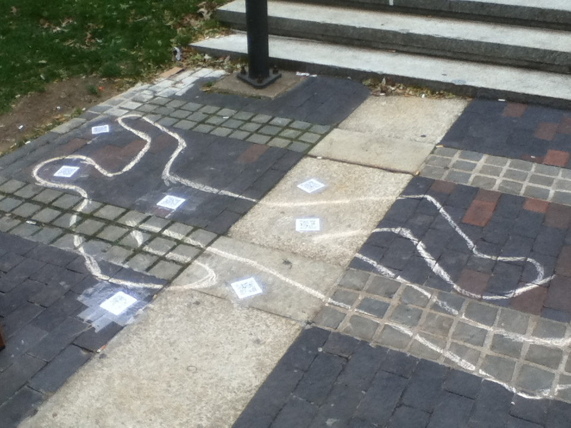
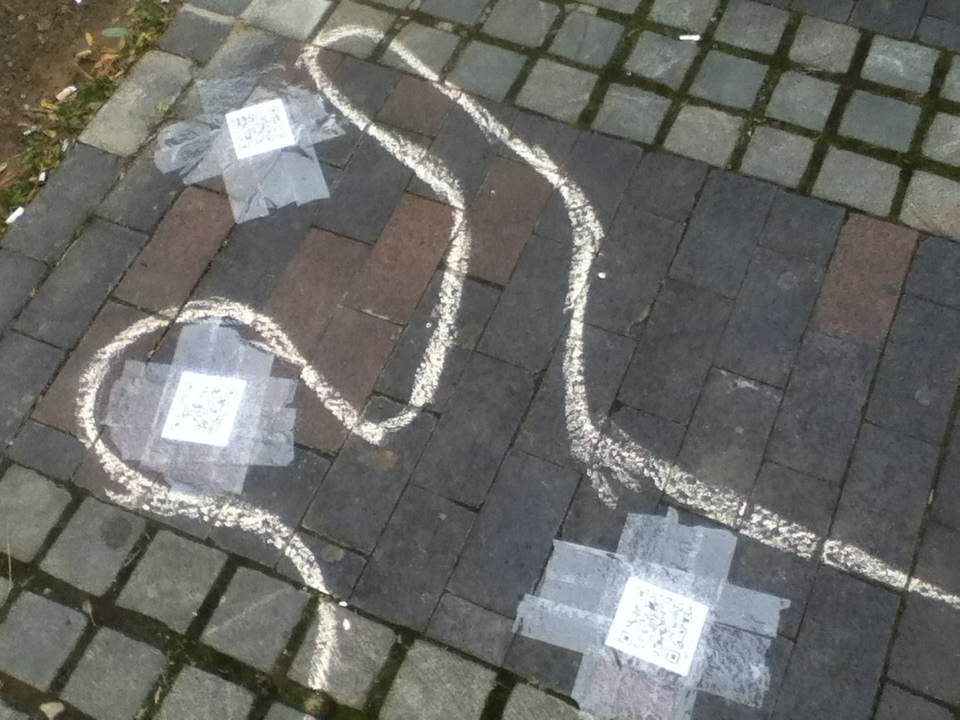
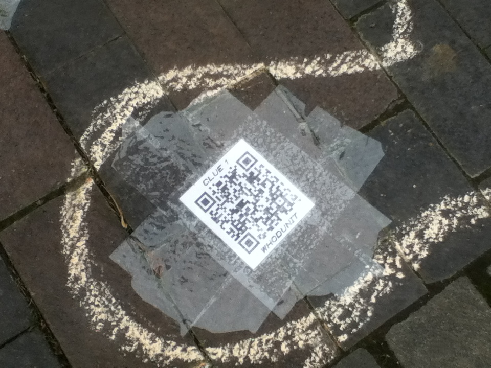
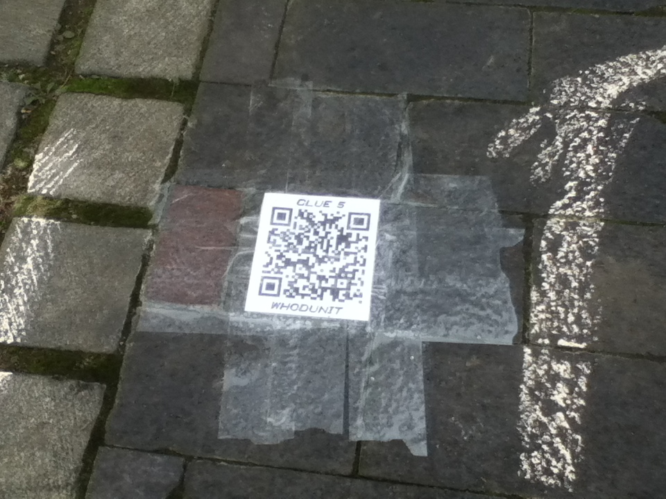
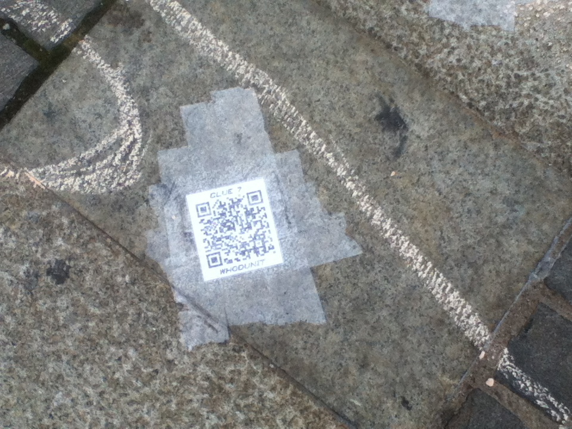
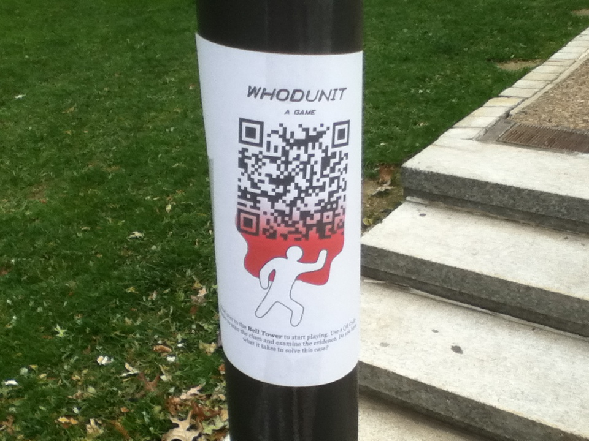

Overview
Site Map
Photos of the Project
The Body:
A Close-Up and a Wide Shot:
Some Clues:
  The Flyer:
Project Evaluation
I enjoyed creating this project, especially the riddle aspect of it. I wanted to create a narrative, but I also wanted it to be interactive. What better way to do both than to create a mystery? I also thought that a mystery would draw people in. There is an element of uncertainty that gnaws at people until they either figure out the answer or give up and ask for it. Either way, people must find out. It is in their nature.
It is surprising to me, then, that no one participated in my project. The final page of my project (titled "Solve It!") has a submission form so that when a participant deduces the answer to the riddle, they can check their answer. They input their email address and their theory, and then they are redirected to another page that explains the true answer. However, I also wrote some code so that their submission would end up in my email's inbox. I created a filter to move all incoming messages from the site to a specific folder so I wouldn't be inundated with the submissions. As of 2:47 pm on Wednesday, November 7th (meaning that the project has been up for a total of 53 hours...), I have recieved no emails. Other than a few tests to see if the system works, that folder remains empty.
I wish I could offer up some information on user participation and talk about how to improve their experience of the project in the future, but I've got nothing to work with. I did send out a link to a bunch of friends, but it appears that the only ones who were interested do not have smartphones. I think that really limited the amount of participation this project could have had. Personally, I don't have a smartphone, so I never give QR Codes a second glance. Even if I did, I would probably assume that they were an advertisement and not even waste my time. Unfortunately for this project, I don't think QR codes are used enough for people to get behind them. I know this is paradoxical, but there is a tipping point which eventually causes things like this to go mainstream, and QR codes haven't reached that point.
There are a few things I would have done differently, though. I placed the crime scene at the Bell Tower, which is arguably the busiest crossroads on campus, hoping to get the most participation there. However, my project was very two dimensional. It just laid on the ground, and people simply walked over it without noticing. I had originally planned on using CSI type evidence markers, but I was afraid that they would blow away, so I used stickers instead. While my project stayed intact for a longer period of time, it didn't get attention. I needed something else to help it stand out. I did put flyers up as well, but the lack of funds did not allow me to print giant/colorful/ubiquitous/attention-grabbing posters. People simply did not care enough to spend their time.
I also have no idea if the project was even do-able or not. I wanted to make it very difficult, and that could have turned people away. Some may have looked at it when I wasn't around and tried really hard to come up with something. But the difficulty could have made them give up. I just don't know. Even with the link to this page on Edmodo, allowing all my classmates access to the clue pages, none bothered to play it to its conclusion.
In the future, I don't think I will bother with QR codes. The idea is great in theory with linking the physical to the virtual. But I think they only reach a very limited demographic: people with smartphones AND a qr code app AND enough free time AND enough motivation. There aren't that many of those people though, and I feel like I could have reached a bigger audience with more conventional methods.